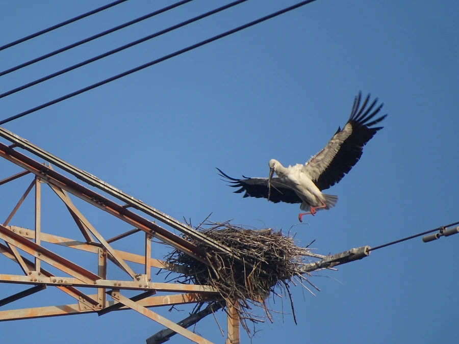

鸟类 · 动物界
东方白鹳 Ciconia boyciana

体态优雅的大型涉禽，全身雪白、翅端发黑、喙长而黑，在东北沼泽繁殖、在长江流域越冬，全球仅存数千只。
- 分类
- 门脊索动物门纲鸟纲目鹳形目科鹳科属鹳属
- 栖息环境
- 芦苇沼泽、湖泊浅滩、水田和河漫滩，营巢于高大乔木或人工塔架
- 地理分布
- 繁殖于中国东北、俄罗斯远东和朝鲜半岛，越冬于中国长江中下游及东南沿海
- 保护级别
- IUCN 濒危（EN）；中国国家一级保护动物
物种志
东方白鹳体长 100–129 cm，体重 3–4.5 kg，翼展 180–200 cm，是体形高大的涉禽。它全身羽毛雪白，只有外侧飞羽为黑色，飞行时黑白分明；喙长而粗壮，呈黑色，眼周裸露的皮肤为红色，腿细长呈红色。它常单腿站立在浅水中，颈部伸缩自如，姿态沉稳优雅。
东方白鹳繁殖于中国东北、俄罗斯远东和朝鲜半岛的沼泽湿地，在长江中下游的鄱阳湖、洞庭湖以及江苏沿海越冬。它们以鱼、蛙、昆虫和鼠类为食，常在浅水区缓慢行走，用长喙迅速夹住猎物。繁殖期在高大乔木或输电塔上营巢，巢由树枝堆成，直径可达 2 m，每窝产卵 3–5 枚，孵化 31–34 天。由于湿地围垦和食物减少，全球野生种群仅约 3000–4000 只，被列为濒危物种和中国国家一级保护动物。
形态与习性
- 食性鱼、蛙、昆虫、鼠类和小型鸟类
- 体长100–129 cm
- 体重3–4.5 kg
- 翼展180–200 cm
- 繁殖每窝 3–5 枚卵，孵化 31–34 天
- 寿命野外约 20–25 年
- 巢址高大乔木或输电塔，巢径可达 2 m
趣味知识
- 东方白鹳曾长期被视为欧洲白鹳的亚种，20 世纪后期才被确认为独立物种。
- 它们喜欢在高大乔木或输电塔上营巢，巢的直径可达 2 m。
- 繁殖期东方白鹳会用上下喙快速敲击，发出“嗒嗒”的响声交流。
- 全球野生东方白鹳仅约 3000–4000 只，中国东部沿海是重要越冬地。